chainplates
2024.03.04
Victoria, BC.
Click below dates for more recent updates:
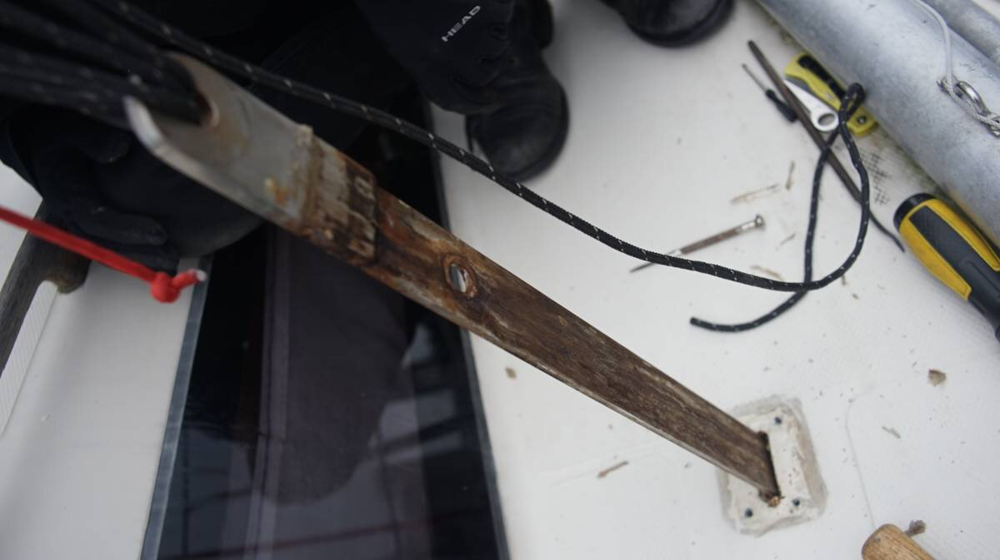Despite owning Pino for 8 years, there are still parts we've never removed, or seen. Because we plan to cruise in Northern BC this year, we decided to pull the boat's chainplates to inspect them.
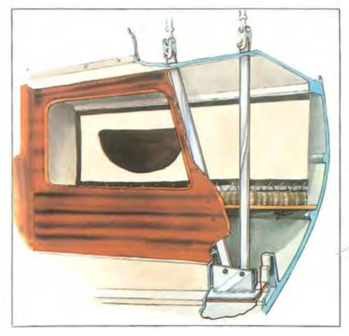Yamaha 33's, with the engine in the stern, have very long chainplates that go through the deck at four points. The forwardmost chainplates secure the cap and intermediate shrouds, and the aftmost chainplates secure the lower shrouds.
Each chainplate is secured to a cabin bulkhead with one beefy bolt, and then fastened to a heavy stainless steel plate that is embedded(fiberglassed) into the hull. It's hard to get a good look at this fiberglassed piece of metal because it is nestled inside a narrow locker with an equally narrow opening, but using a mirror helps. We saw that it had a lot of surface rust, but the metal itself was fine once we removed all of the grime and dust. 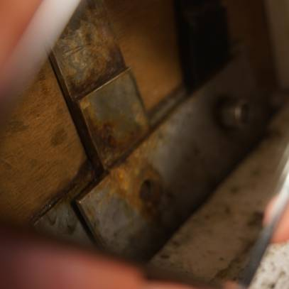
We secured the mast by tying 3 halyards on the toe rail on each side(Pino has a lot of halyards), removed all of the cotter pins, loosened the turnbuckles attached to each chainplate, removed the backing plate and scraped off the weatherproof sealant where the chainplate enters the hull. Pulling them out by hand wasn't possible, so we tied a halyard to the topmost hole, a cockpit winch gave us the power we needed to get it out.
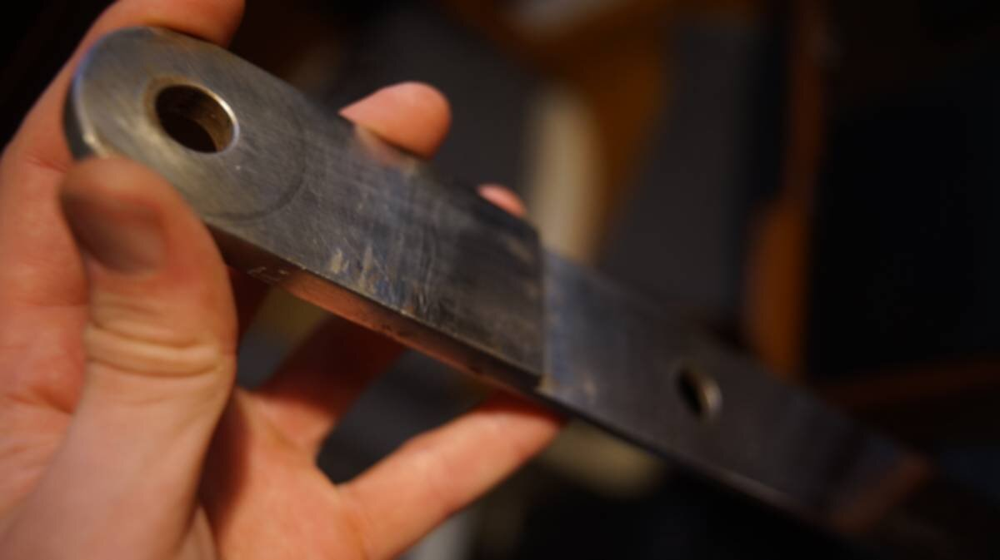The first chainplate looked better after a good clean-up, but when the grime was gone it revealed some pit corrosion around one of the upper bolt holes, a common sight for boats Pino's age. The others also had the same problem, we even spotted a small crack near one of the welding points on one of them. We had not realized this until now, but Pino's chainplates were thicker at the top and bottom than in the middle—another layer was welded to both ends to add thickness.
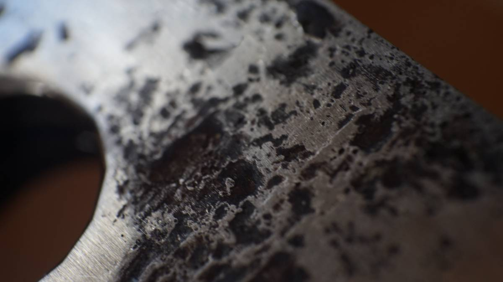If a length of SS exhibits pit corrosion on the surface, it is an indicator that the corrosion goes deep into the metal. A crack in the material is not a good thing overall. Stainless Steel is very resistant to corrosion, but can rust when there is moisture and no oxygen(a common issue for chainplates that lie flat onto bulkheads and that are sealed at the deck to prevent water intrusion).
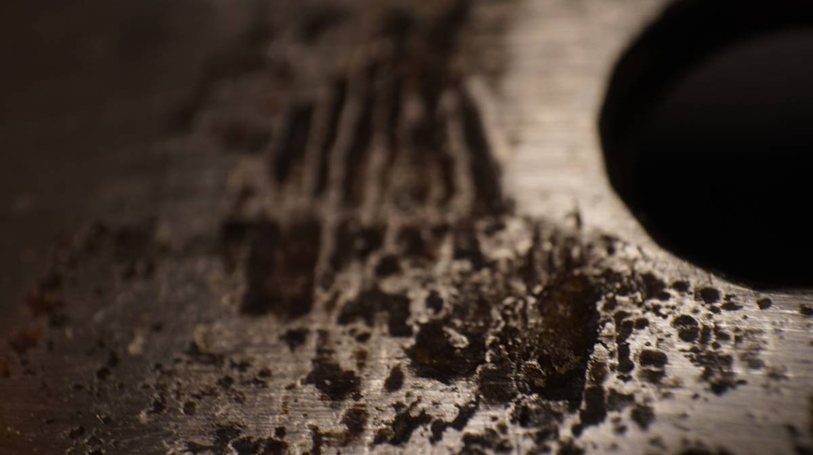Yamaha 33 chainplates: The two cap shroud and two intermediate shroud chainplates are straight flat SS bars, 1.22m (4 ft) in length, they look the same but the starboard-side chainplate has a bottom bolt hole that is off-center.
The two lower shroud chainplates are a bit longer, the top has a slight bend and an angle. All of the chainplates are thicker(8 mm) at the top and bottom, and thinner(6.35 mm) in the middle. An extra piece of SS was welded at both ends to add strength, and the rest was left thin—to save on weight, we think.
Unfortunately, we don't think it'll be possible to re-install 8 mm chainplates. No supplier in town carries flat bars with metric measurements. We'll likely have to size up to 9.5 mm. Sizing up may mean having to enlarge some holes... but we'll see. In any case, sizing up is better than sizing down, and we'd rather not have to weld plates together again.
On the morning of the 6th, we took a bus north to Canoe Cove to drop off our chainplates for fabrication(they use the old ones as templates). We thought about making the chainplates ourselves, but we don't have the right tools to do the work. One of our chainplates has an angle, not something we can replicate, and there's no way that we can drill holes through metal that thick with a hand drill. We expect everything to cost somewhere between 1000-1500$CAD. Offloading this task will permit us to focus on repairing the damaged core about the chainplate holes.
For the damaged core, we did nothing noteworthy. We removed a lot of wet wood and let the space dry out. We were lucky, the weather had been awful these past few weeks, but we got one good week of sunny, warm, summer-like weather. Once the wood appeared dry, we filled the edges of the hole with thickened epoxy. The next day, we enlarged all of the holes for the chainplate backing plate, and poured runny epoxy inside all 4 holes. Then the next day, we scuffed up the surface and added thickened epoxy to level the holes. Now, there is a solid barrier all around the hole for the chainplates and around the holes for the backing plate.
Note: Had we not been in a marina, we would have considered cutting off the top fibreglass skin of the deck to insert a new marine ply core, but we can't do that kind of work here, the marina will kick us out... and so we did as little epoxy work as we could, while making the space solid. Either way, we would have epoxied the walls of the chainplate hole, leaving bare wood there was a big design flaw.
Starboard side saloon cabinet
With the chainplates off the boat, Devine went to work at removing the starboard side cabinet to see what the back wall looked like (we've never seen that part of Pino before).
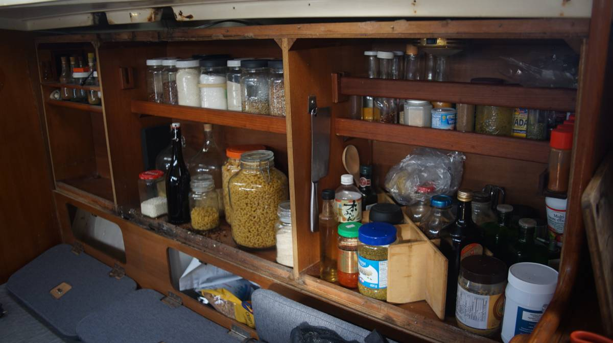Devine was looking forward to removing it to repair it, because overtime the screws holding the front and back together got bent, half of them were halfway out of their holes. There is no way for the cabinet itself to come out, the chainplates hold it in place, but on a hard heel, the front panel of the cabinet could have popped out of its spot. Neither of us want to get smacked in the head by this thing.
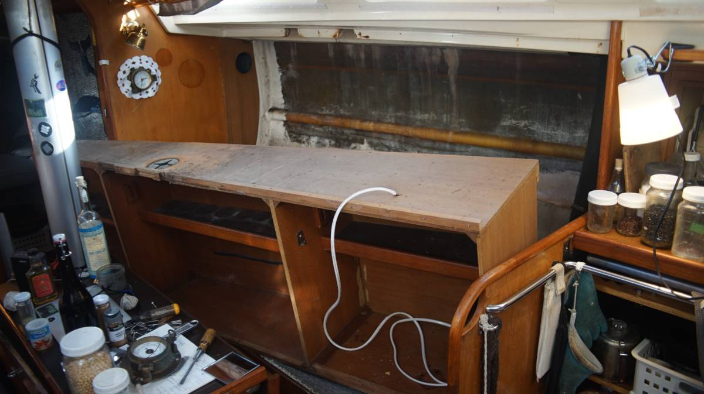We replaced some of the cabinet wood and the screws. Some of the wood was damaged because of years of water intrusion, neglect by former owners, whom we think must not have gone aboard much during winter. If you only spend time aboard when the weather it nice, it is difficult to know that you've got leaks, you're not likely to act on it until the leaks start to cause visible damage and by then it's too late.
Chainplates installation
We were nervous about not having any of the starboard and port side chainplates supporting the mast. There isn't too much wave action in the marina, but we did have a few gales. We had a day of 45-50 knots from the SE in the Victoria Inner Harbour. Our mast is keel-stepped, it was well-secured(5 halyards, with backstay, headstay and baby stay still on), but it was still worrisome. All of the supporting halyards were attached on the toe rail at various points, we ran a line through various holes and attached the supporting lines to this to spread out the load.
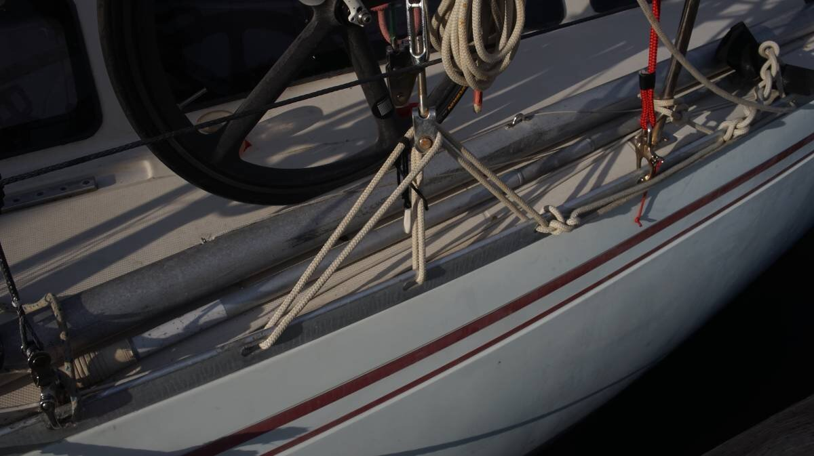We went to pick up our new chainplates on the 28th of March. The total cost was 1130$ (400$ for the material and around 600$ for the labor). The fabricator replicated the look of our old chainplates, minus the welding, with an added thickness of 1.5 mm. No one in B.C. stocks metric metal bars, so upsizing was our only option.
Our good friend Julia gave us a ride to Canoe Cove, we thought it unsafe to carry them back by bus because of their weight. We wouldn't want to drop them on someone's toes, or to accidently crack a window.
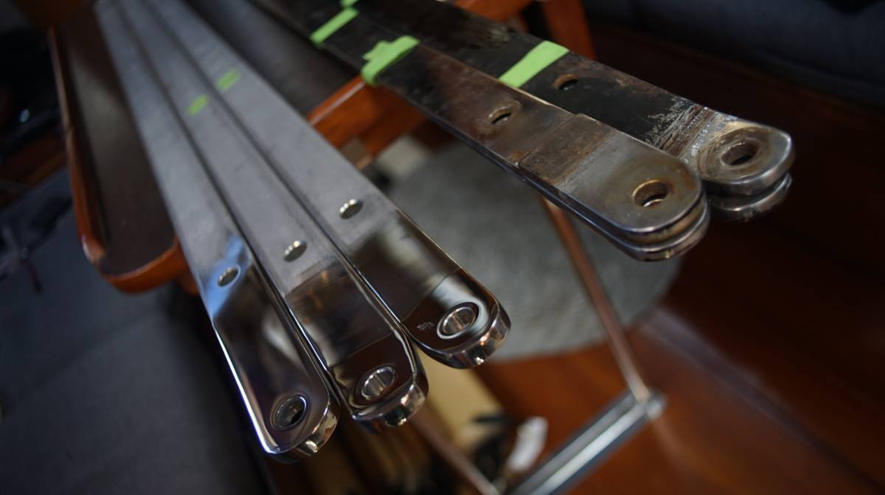We brought the old chainplates back too. We want to cut up the old bars and to make 2 holes(2 for exiting bolts) in them to add support between the chainplates just before they exit on deck. When we bought Pino in 2016, both the starboard and port side bulkheads had dry rot around the topmost bolt in the cabin. We fixed the wood, but adding a horizontal SS bar between the two chainplates on each side would add strength.
As expected, we had to widen the existing holes on the deck—not a problem. We also had to cut away some of the wood to allow them to pass through the cabin. We were concerned that the thicker plates wouldn't fit inside the metal sandwich glassed into the hull, but we were able to work it in.
While installing the starboard side cap and intermediate shroud chainplate, we noticed that the hole in the bulkhead didn't align with the hole in the metal. We wondered for a moment if the fabricator had made a mistake, but then we looked at our original chainplates and saw that they weren't identical. Like always, we had assumed that they were the exactly the same... we keep making that mistake. The bottom-most hole for the starboard side chainplate is off-center. Because we hadn't noticed, we put them in the wrong way... our mistake was evident when we saw that the bulkhead holes didn't align. So we took them out again, swapped them, and everything was fine and merry!
Well, kind of. When inserting the lower shroud chainplate on the port side we had to remove the aluminum track in the pilot berth. Because the chainplates are thicker, they couldn't slide past the aluminum rail. Removing this track wasn't a problem, we weren't using it. Even the previous owners had installed another way to keep the space closed that didn't rely on this track. The only thing this track was good at was gathering dust.
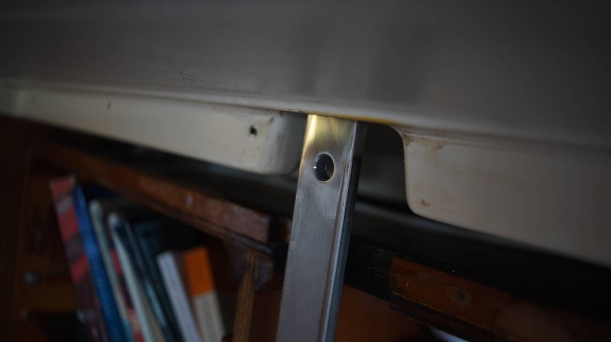Unfortunately, the problems did not end there. Both of us assumed that the backing plates would fit the new chainplates. Surprise! They don't.
We dropped them off at a machinist on the 2nd of April to get them to enlarge the holes.
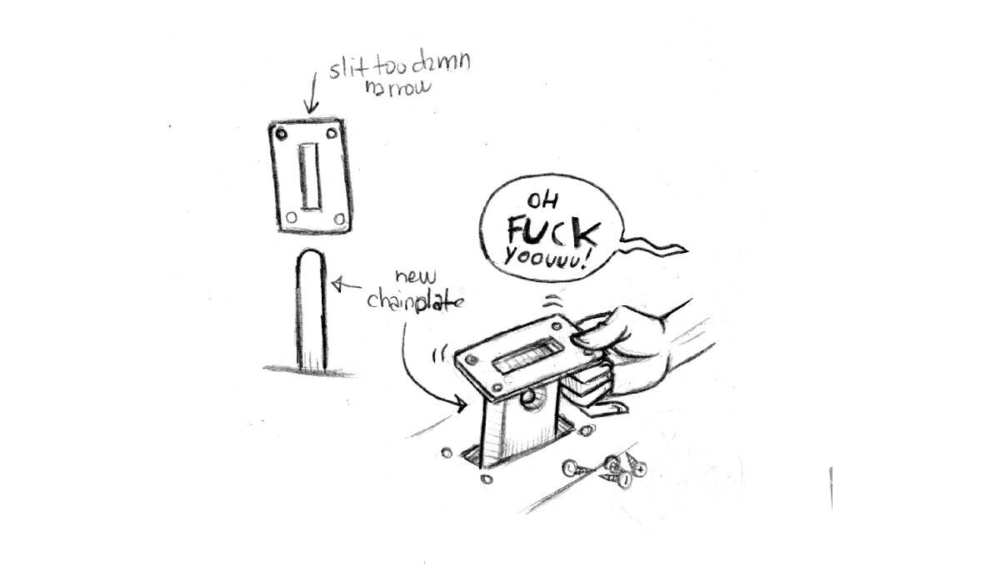We taped up the holes around the chainplates in the meantime to keep water out.
2024.04.12
Victoria, BC.
The time has come to finally close this project! We got a call from the machinist yesterday and went to pick up the enlarged plates.
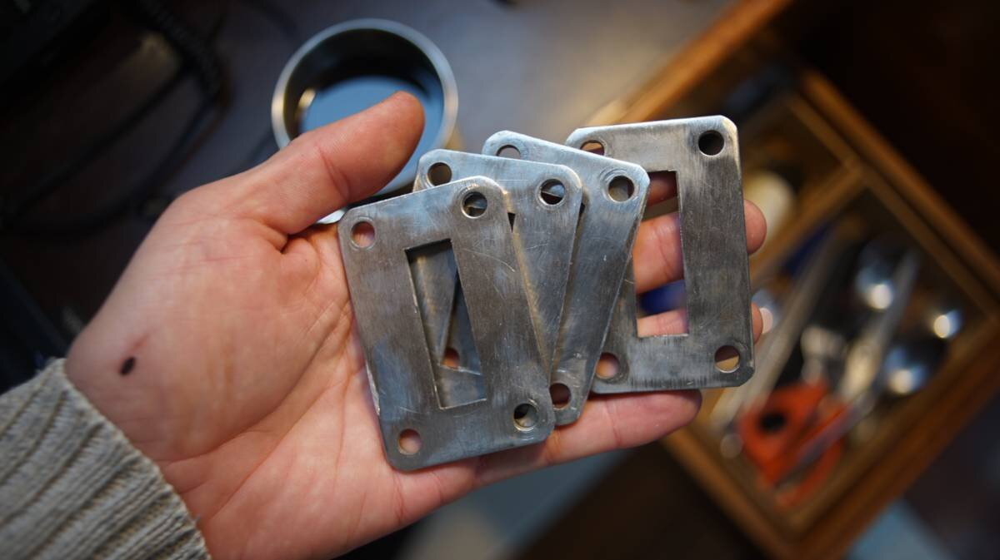As promised, we also installed a length of SS(made from our old chainplates) between the two new chainplates, linking the two upper bolt holes. This will serve to reenforce the wall connection.
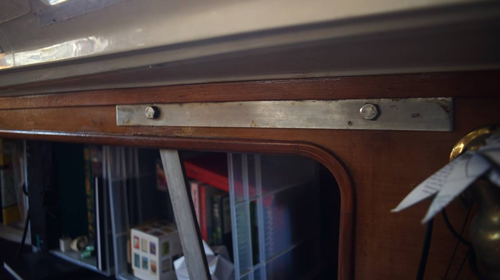 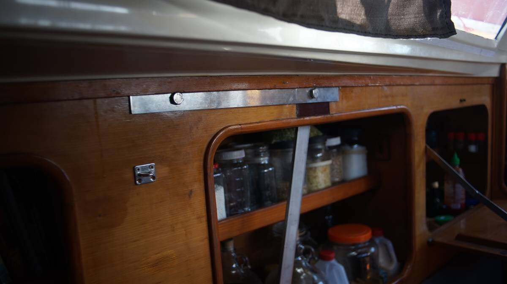We bedded the new chainplates outside with some butyl tape, and installed the modified plates overtop. Note that we added more butyl tape than in the picture, the photo only shows the length we applied around the main gap in the deck.
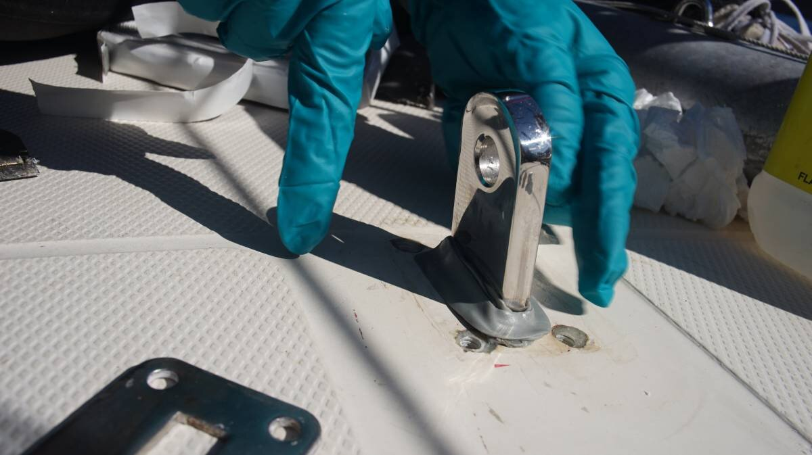